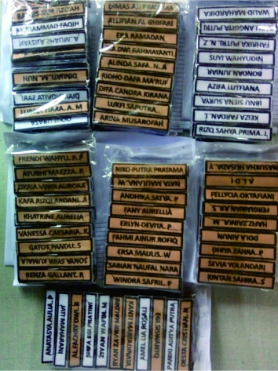
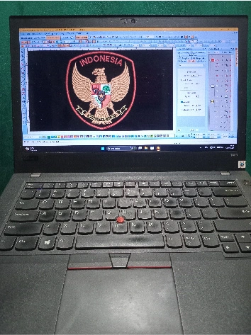

"Satu jahitan saja meleset, ia akan kehilangan martabat"
Carilah ilmu agar bisa menjadi pribadi yang profesional, bukan menjadi orang yang pintar mencari uang.
Galilah potensi yang ada pada dirimu. Agar kamu punya identitas dan bisa bendiri kokoh di atas kakimu sendiri.
Di mana pun kamu berada, kamu harus bisa menjadi orang yang berguna bagi lingkungan sekitarmu.


Apa pun tugasmu, lakukan dengan integritas. Karaktermu jauh lebih berharga dibanding nama di dada.
Bahu-membahu, saling bekerja sama, tolong menolong. Adalah kekuatan akar Bangsa
Hidup itu harus saling menghargai. Agar semua menjadi baik, sesuai porsinya masing-masing.

Apa pun profesimu, pastikan pola batinmu sudah benar. Jangan sampai garis hidupmu melenceng.


Membangun karakter anak bangsa. Agar bisa menjadi generasi penerus yang bermartabat.


Rasa senang setelah membantu orang lain, sesungguhnya itu adalah pahala yang langsung kita terima.
Kemenangan sejati bukan tentang seberapa jauh kita pergi, tapi seberapa jujur kita pada diri sendiri.
Jangan jadi manusia yang perhitungan, sementara oksigen di paru-parumu saja nggak pernah dipajaki.


Jangan sampai hanya software dan ponselmu yang rutin di-update, tapi nalarmu dibiarkan berdebu.
Meskipun saat ini kita hidup di tengah "kubangan lumpur", pastikan Sistem Tawakal kita tetap RUNNING.


Cara terbaik untuk memperbaiki diri adalah dengan berani berkaca pada kekurangan diri sendiri.

Ada Virus Defender gratis yang sering lupa kamu instal: Anti virus itu namanya SYUKUR.


Pilar utama yang setia merajut benang menjadi harapan. Tetaplah melangkah, jangan lelah.


Penjaga perbatasan yang memastikan karya tak terurai. Menjaga detail terkecil dengan ketelitian tanpa pamrih.


Sang pengunci kenyamanan dalam setiap jahitan. Dedikasimu adalah bukti perjuangan sejati.


Membuka ruang tanpa membiarkan diri hancur terpecah. Penjaga keteguhan di setiap sisi kehidupan.


Pelukis benang yang memberikan jiwa pada kain. Karyamu abadi di setiap tarikan napas.


Langkahmu tapak demi tapak dengan presisi tinggi, laksana sniper daratan sejati.



Didukung ekosistem alat desain digital komplit demi menghasilkan bordir presisi tinggi.


Sesungguhnya nenek moyang kita adalah pondasi yang sangat kuat dan tangguh. Jangan lupa sejarah.


Kamu yang paling gagah melibas tumpukan masalah. Kini semangatmu masih membara dalam dada.


Personil yang patah dalam perjuangan merajut karya. Semoga ada keberkahan di dalamnya.


Garda terdepan berjuang merajut karya sejati. Kini kau telah paripurna. Damailah kalian semua.

Wujudmu kini bukti. Betapa keras perjuangan yang telah kau lewati. Terima kasih telah bersama selama ini.